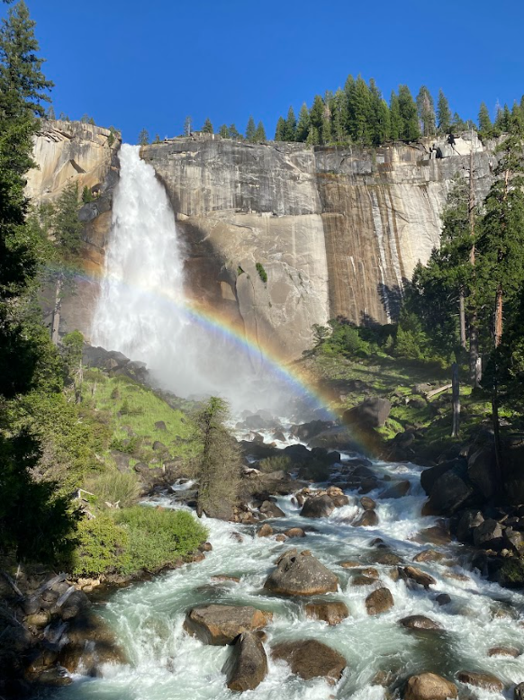
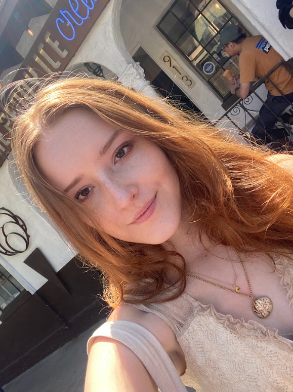
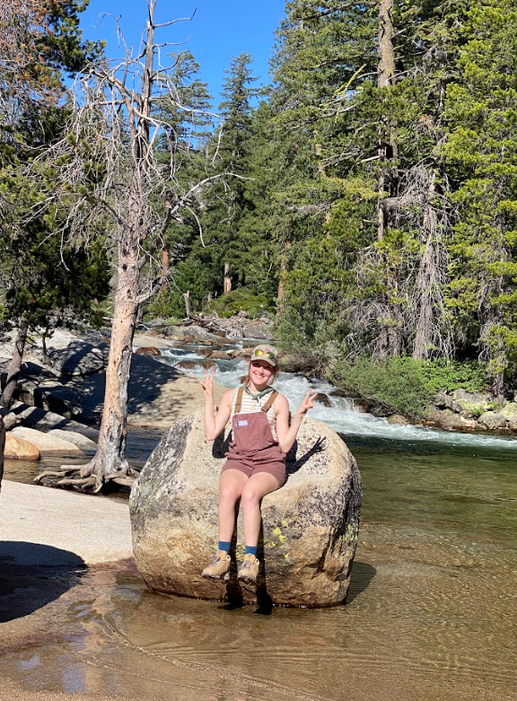

Zosia Trela's Portfolio



About Me
Hello! My name is Zosia, I am a third year CS: Game Design Major. My favorite games are Overwatch, Minecraft and GRIS. Other than games playing and making games, I love to hike and spend time outdoors.